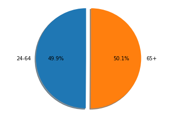
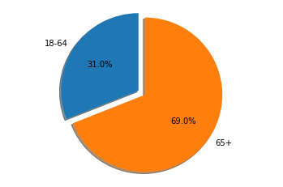
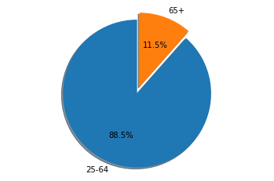
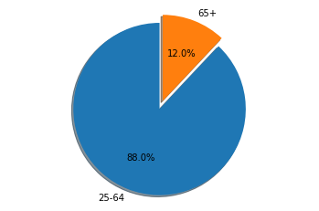

How did H1N1 impact different age groups in the US?
Age Groups Observed: 18 - 65 and 65+

Influenza cases by Age.
Hypothesis: Our hypothesis was that people 65 and older did experience higher death rates because typically their current health has a large impact on their ability to fight off disease.

Influenza Deaths by Age.
Based on further evaluation, Influenza invoked a severe impact on those 65+ years of age and older. Something that has been closely monitored over the last several years as those that are older are more susceptible. This is thought to be because the older generations had been exposed to similar flu strains earlier in their lives.

H1N1 Cases by Age.
The data we found makes it obvious that younger people encountered higher spread and death rates during H1N1 pandemic. The older population must have some exposure that allows for immunity.

H1N1 Deaths by Age.
Conclusion: Globally, 80 percent of H1N1 virus-related deaths were estimated to have occurred in people younger than 65 years of age. This differs greatly from typical seasonal influenza epidemics, during which about 70% to 90% of deaths are estimated to occur in people over 65 years.